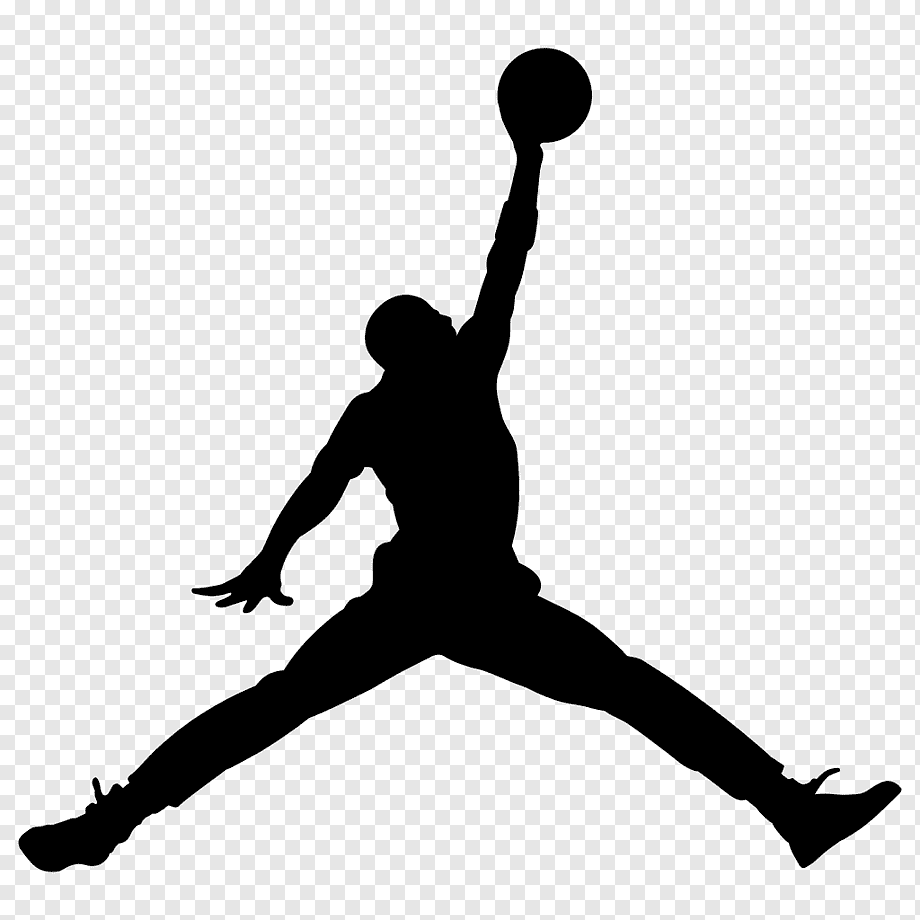
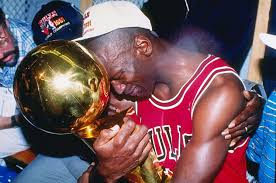
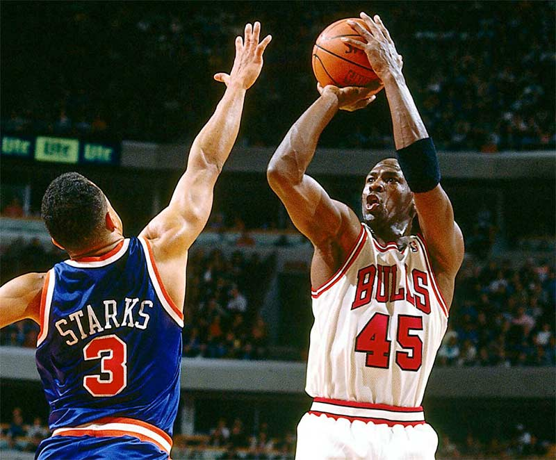
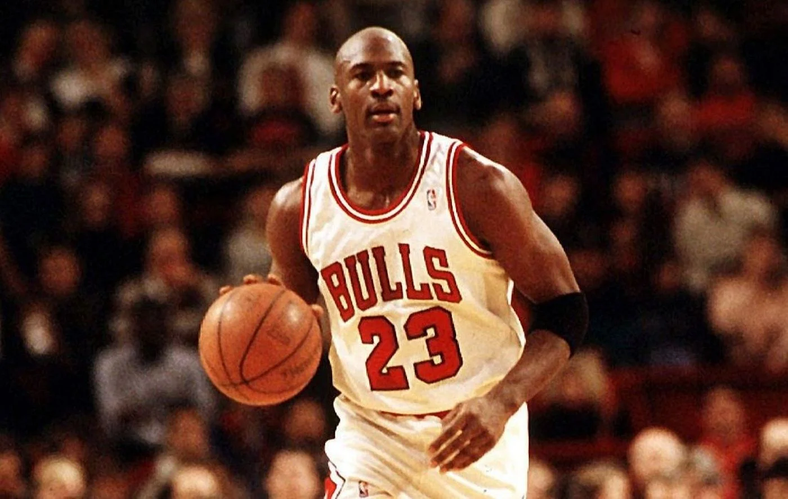

Michael Jordan
Draft 1984
Jordan estudou na Universidade da Carolina do Norte,onde foi campeão da NCAA em 1982. Entrou na NBA em 1984 ao ser escolhido pelo Chicago Bulls,e logo se tornou uma das estrelas da liga por sua incrível capacidade de pontuar e habilidade nos saltos.

The Goat
Michael Jordan viria a se tornar um hit entre os torcedores já desde sua primeira temporada, quando registrou uma média de pouco mais de 28 pontos por partida e uma vaga no NBA All-Star Game - que elege os destaques da liga - e o título de estreante da temporada.Ao lado de Scottie Pippen, Michael Jordan conquistou o seu primeiro 'three-peat', tricampeonato entre os anos de 1991 e 1993, que renderam seus dois primeiros troféus de MVP da NBA - o título de melhor jogador de uma temporada.
The Shot
The Shot foi uma jogada de basquete que ocorreu durante um jogo de playoff de 1989 entre o Chicago Bulls e o Cleveland Cavaliers da National Basketball Association (NBA). Aconteceu em 7 de maio de 1989, no Richfield Coliseum em Richfield Township , Ohio , durante o jogo decisivo 5 da série da Primeira Rodada da Conferência Leste entre Bulls e Cavaliers. Com a série melhor de cinco empatada em dois jogos cada e os Cavaliers liderando o jogo por um ponto faltando três segundos para o fim, o jogador dos Bulls, Michael Jordan , recebeu um passe de entrada e deu um chute para dar aos Bulls uma vantagem . Vitória por 101–100 e conquista uma vitória na série. A jogada encerrou um minuto final em que houve seis mudanças de vantagem. Jordan terminou o jogo com 44 pontos. O Shot é considerado um de seus maiores momentos de embreagem , e o jogo em si é considerado um clássico.

Primeiro Troféu
Na temporada 1990–91, Jordan ganhou seu segundo prêmio de MVP após uma média de 31,5 pontos e 53,9% nos arremessos, além de 6,0 rebotes e 5,5 assistências. Os Bulls venceram a Divisão Central pela primeira vez em 16 anos, e estabeleceram um recorde da franquia com 61 vitórias na temporada regular. Com Scottie Pippen se tornando um All-Star e se desenvolvendo, os Bulls tinham elevado seu jogo. Após superarem os Knicks e os 76ers, os Bulls pela quarta vez consecutiva enfrentavam os Pistons nas finais do Leste, desta vez conseguindo varrer os rivais. Em um final incomum para o quarto e último jogo, Isiah Thomas levou sua equipe para fora da quadra antes dos segundos finais. A maioria dos jogadores dos Pistons foram diretamente para o seu vestiário, em vez de apertar as mãos dos jogadores dos Bulls. Os Bulls avançaram para as finais da NBA pela primeira vez na história da franquia para enfrentar o Los Angeles Lakers de Magic Johnson e James Worthy. Chicago venceu a série 4–1, completando 15–2 em todos os playoffs. O primeiro título de Jordan também lhe fez ser escolhido MVP das Finais, com médias de 31,2 pontos e 56% nos arremessos, além de 11,4 assistências, 6,6 rebotes, 2,8 roubos de bola e 1,4 tocos.
Primeira Aposentadoria
Em 6 de outubro de 1993, Jordan anunciou sua aposentadoria, citando uma perda de vontade com o basquetebol, influenciada pelo assassinato de seu pai meses antes. James R. Jordan, foi assassinado no dia 23 de julho de 1993, em uma área de acostamento em uma rodovia em Lumberton, Carolina do Norte, por dois adolescentes, Daniel Green e Larry Martin Demery. Os assaltantes foram localizados a partir de chamadas que fizeram no telefone celular de James Jordan, e condenados e sentenciados à prisão perpétua. Em 1996, Jordan fundou uma área de Chicago Boys & Girls Club dedicada a seu pai.

O Retorno
Na temporada 1993–94, mesmo sem Jordan, os Bulls conseguiram 55 vitórias para se classificar aos playoffs, onde caíram na segunda rodada para os Knicks. Em 1994–95, os Bulls lutavam para garantir uma vaga nos playoffs, com meros 31–31 em meados de março. A equipe recebeu um gás a mais para sua classificação, quando Jordan anunciou seu retorno à NBA em 18 de março de 1995. No dia seguinte, Jordan voltava às quadras contra o Indiana Pacers Indianápolis, vestindo a camisa número 45 (o seu número com os Barons), pois sua camisa 23 havia sido aposentada em sua homenagem. Jordan marcou 19 pontos,[ no que era o jogo da temporada regular com maior audiência televisiva desde 1975.
Quarto Título
Recém motivado pela derrota nos playoffs, Jordan treinou agressivamente para a temporada 1995–96. Fortalecido pela adição de Dennis Rodman, os Bulls dominaram o campeonato, iniciando a temporada com 41–3, e, finalmente, terminando com a, até então, melhor campanha de temporada regular da história da NBA: 72 vitórias e 10 derrotas. Jordan liderou a liga em pontuação com 30,4 pontos, e foi eleito MVP da temporada regular e do All-Star Game. Nos playoffs, os Bulls perderam apenas três jogos nas quatro séries, derrotando o Seattle Supersonics nas finais por 4–2 para o tetracampeonato. Jordan foi nomeado MVP das finais pela quarta vez, superando o recorde de Magic Johnson. Ele também se tornou o segundo jogador, desde Willis Reed a ser eleito MVP da temporada regular, All-Star Game e da Finais. O jogo do título foi exatamente no Dia dos Pais, sendo que a aposentadoria de Jordan anos antes foi instigada pela perda do pai, levando Michael ficar muito emocionado e chorar nos vestiários.
